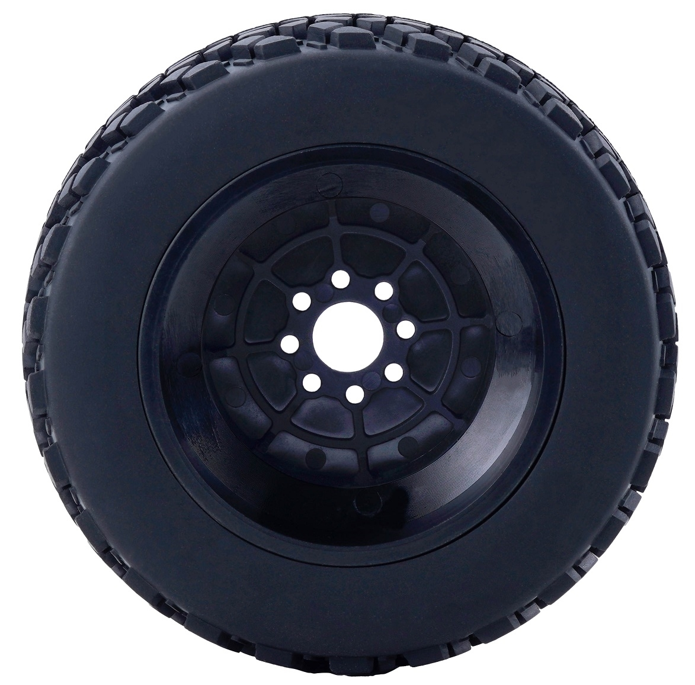
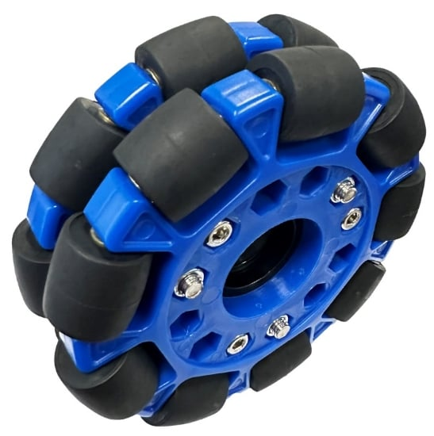
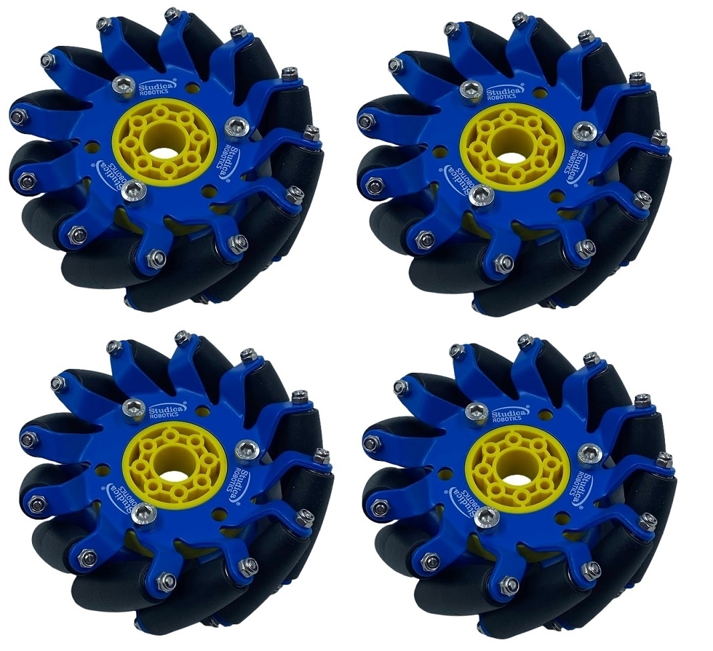

輪子（Wheels）
| 越野輪 | 全向輪 | 麥克納姆輪（2 左 2 右） |
|---|---|---|
 |  |  |
1. 它是做什麼的？
輪子把馬達的旋轉變成機器人的移動。選不同的輪子，決定機器人能往哪些方向走、抓地力、能不能過障礙。
2. 三種常見輪子
| 種類 | 構造 | 能怎麼動 |
|---|---|---|
| 一般輪 / 越野輪（All-Terrain） | 一整圈橡膠輪胎 | 只能前後滾，轉彎靠兩側速度差 |
| 全向輪（Omni Wheel） | 輪緣有一圈小滾輪，與輪子方向垂直 | 前後主動滾，側向可以被推著滑 |
| 麥克納姆輪（Mecanum Wheel） | 小滾輪斜 45° 排列 | 四顆配合可前後、橫移、斜走、原地轉 |
3. 原理
差速轉向（一般輪）
左右兩側輪子速度不同就會轉彎：
- 左右同速 → 直走
- 左快右慢 → 向右轉
- 左前右後 → 原地轉
全向輪
小滾輪讓輪子側向幾乎沒有摩擦。常見配置：
- 三輪 120° 或 四輪 90°（X 形 / 十字形） → 可以往任何方向走（全向移動）。
- 只裝兩顆在後面、前面放萬向輪 → 當一般差速車用，但轉彎更順。
麥克納姆輪
每顆輪子轉動時，因為滾輪斜 45°，對地面的推力也是斜的。四顆輪子的斜向力互相抵消或疊加，就能往不同方向移動：
| 動作 | 左前 | 右前 | 左後 | 右後 |
|---|---|---|---|---|
| 前進 | 前 | 前 | 前 | 前 |
| 右平移 | 前 | 後 | 後 | 前 |
| 原地右轉 | 前 | 後 | 前 | 後 |
麥克納姆輪有左右之分，安裝方向錯了就無法平移。由上往下看，四顆輪子的滾輪要排成「X」形（依常見配置，以實際套件說明為準）。
4. 重要參數
| 參數 | 影響 |
|---|---|
| 直徑 | 越大 → 速度越快、越容易過障礙，但需要更大扭力 |
| 寬度 / 材質 | 越寬、越軟 → 抓地力越好 |
| 軸孔形式 | 要配合馬達輸出軸（例如 6 mm D 型軸、六角軸）與輪轂 |
| 承重 | 每顆輪子能承受的重量 |
輪子大小與速度
車速 (m/s) = 轉速(rpm) × π × 輪徑(m) ÷ 60
扭力與速度的取捨見 減速比與扭力（Gear Ratio & Torque）。
5. 安裝
- 輪子透過輪轂（Hub）固定在馬達軸上，用止付螺絲鎖在 D 型軸的平面上。
- 四顆輪子要同高、同軸心，否則會有一顆懸空，造成打滑或偏移。
- 麥克納姆輪 / 全向輪的底盤要方正對稱，重心盡量在中間。
6. 安全使用
- 測試時把機器人架高，讓輪子懸空，避免暴衝撞到人或掉下桌子。
- 手指、頭髮、線材遠離轉動中的輪子。
- 定期檢查止付螺絲是否鬆脫（鬆了會打滑、輪子甩出）。
- 全向輪 / 麥克納姆輪的小滾輪要轉得順，卡住要清理。
7. 優缺點
| 種類 | 優點 | 缺點 |
|---|---|---|
| 一般輪 | 抓地力最好、推力大、便宜、編碼器算距離準 | 不能橫移 |
| 全向輪 | 可全向移動、轉彎順 | 抓地力較差、怕推擠、過障礙差 |
| 麥克納姆輪 | 可橫移斜走，最靈活 | 貴、重、容易打滑、地面不平效果差、編碼器距離較不準 |
8. 常見問題
- 麥克納姆輪無法平移 → 輪子左右裝反，或四輪不同高。
- 平移時會偏轉 → 重心不在中間、輪子打滑；用 IMU 修正角度（見 閉迴路控制（Closed-loop Control））。
- 編碼器算的距離和實際不同 → 輪子打滑，全向輪 / 麥克納姆輪特別明顯。